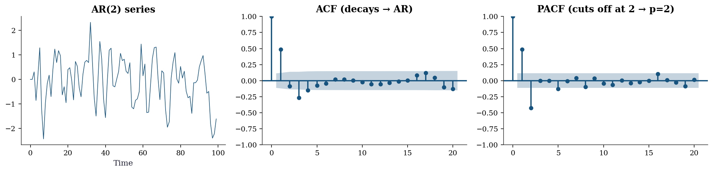
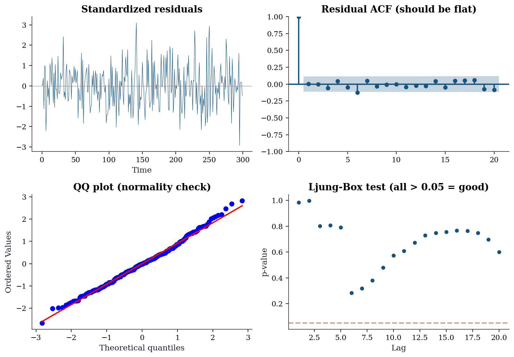
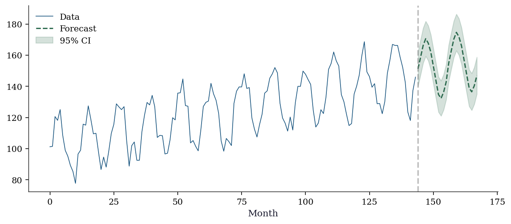
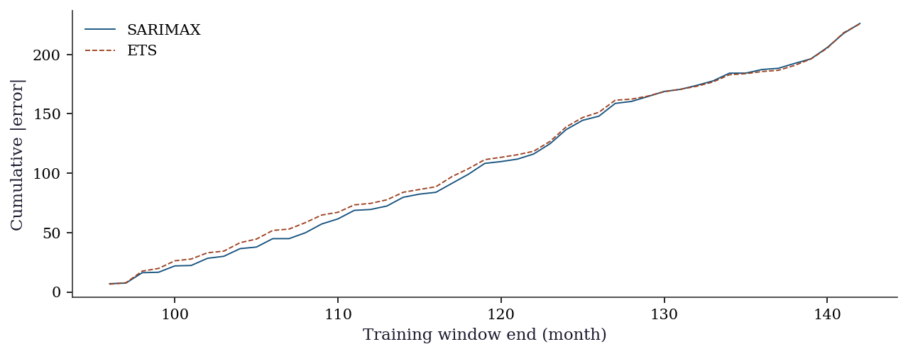
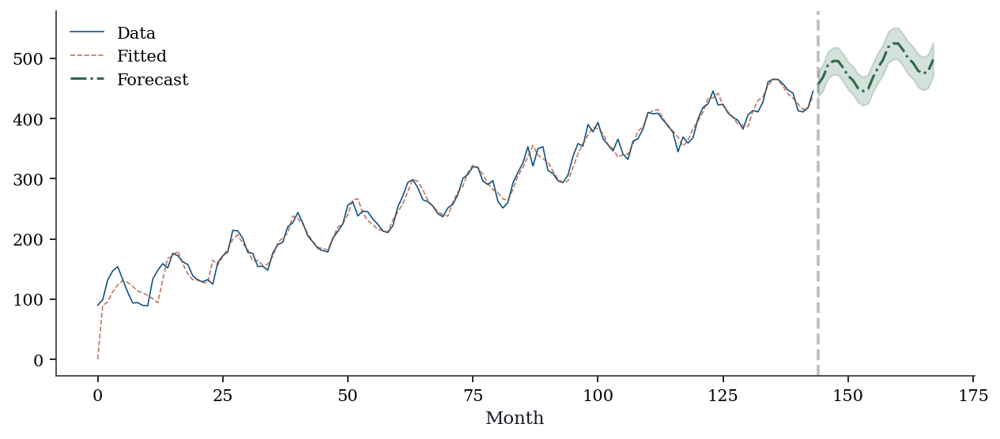
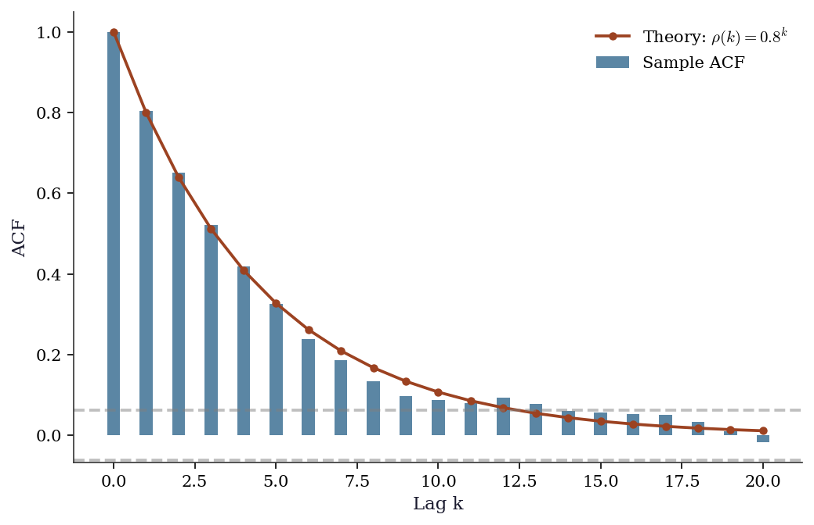

import numpy as np
import matplotlib.pyplot as plt
import pandas as pd
import statsmodels.api as sm
from statsmodels.tsa.arima.model import ARIMA
from statsmodels.tsa.statespace.sarimax import SARIMAX
from statsmodels.tsa.holtwinters import ExponentialSmoothing
from statsmodels.tsa.stattools import adfuller, kpss, acf, pacf
from statsmodels.graphics.tsaplots import plot_acf, plot_pacf
from statsmodels.stats.diagnostic import acorr_ljungbox
from scipy import stats
plt.style.use('assets/book.mplstyle')
rng = np.random.default_rng(42)15 ARIMA, Exponential Smoothing, and the Box-Jenkins Methodology
15.0.1 Notation for this chapter
| Symbol | Meaning | statsmodels |
|---|---|---|
| \(y_t\) | Observation at time \(t\) | endog |
| \(\phi_1, \ldots, \phi_p\) | AR coefficients | .params |
| \(\theta_1, \ldots, \theta_q\) | MA coefficients | .params |
| \((p, d, q)\) | ARIMA order | order=(p,d,q) |
| \(B\) | Backshift operator: \(By_t = y_{t-1}\) | |
| \(\rho(k)\) | Autocorrelation at lag \(k\) | acf() |
| \(\alpha(k)\) | Partial autocorrelation at lag \(k\) | pacf() |
| \(\varepsilon_t\) | White noise innovation | .resid |
15.1 Motivation
Everything in Chapters 10–14 assumed independent observations. Time series breaks this: today’s stock price depends on yesterday’s, this month’s unemployment rate correlates with last month’s, a patient’s blood pressure reading at 3pm is related to the one at 2pm.
If you fit an OLS regression to time series data ignoring the temporal dependence, your coefficient estimates may be consistent but your standard errors will be wrong — usually too small, leading to spurious significance. The methods in this chapter model the temporal dependence directly.
The key idea: a time series can be decomposed into a predictable part (based on its own past) and an unpredictable part (the innovation or shock). The AR model says the predictable part is a linear function of past values: \(y_t = \phi_1 y_{t-1} + \cdots + \phi_p y_{t-p} + \varepsilon_t\). The MA model says the predictable part is a linear function of past shocks: \(y_t = \varepsilon_t + \theta_1 \varepsilon_{t-1} + \cdots + \theta_q \varepsilon_{t-q}\). ARIMA combines both and adds differencing for non-stationary series.
What this chapter covers:
- Why stationarity matters and how to test for it
- The AR, MA, and ARIMA models: what they are, why they work, how to identify the right one
- The Box–Jenkins workflow: a systematic approach to time series modeling
- Exponential smoothing as an alternative
- How
statsmodels.tsaimplements all of this
15.2 Mathematical Foundation
15.2.1 Stationarity: the foundation of everything
A time series \(\{y_t\}\) is weakly stationary if:
- Its mean \(\mu = \mathbb{E}[y_t]\) does not depend on \(t\)
- Its autocovariance \(\gamma(k) = \text{Cov}(y_t, y_{t+k})\) depends only on the lag \(k\), not on \(t\)
Why stationarity matters: If the mean or variance changes over time, a model trained on historical data cannot reliably forecast the future — the future may operate under different dynamics. Stationarity means the process has stable statistical properties, so patterns learned from the past can be projected forward.
Examples:
- A series fluctuating around a constant mean with constant variance: stationary
- A series with an upward trend: not stationary (mean changes)
- A random walk \(y_t = y_{t-1} + \varepsilon_t\): not stationary (variance grows as \(t\sigma^2\))
- Seasonal data with fixed amplitude: stationary after removing the seasonal component
How to make a series stationary: Differencing. If \(y_t\) has a trend, \(\Delta y_t = y_t - y_{t-1}\) may be stationary. If \(\Delta y_t\) still has a trend, try \(\Delta^2 y_t\). The \(d\) in ARIMA\((p,d,q)\) is the number of differences needed.
15.2.2 The AR model: today depends on yesterday
The autoregressive model of order \(p\), denoted AR\((p)\):
\[ y_t = c + \phi_1 y_{t-1} + \phi_2 y_{t-2} + \cdots + \phi_p y_{t-p} + \varepsilon_t, \tag{15.1}\]
where \(\varepsilon_t \sim \text{WN}(0, \sigma^2)\) (white noise: zero mean, constant variance, no autocorrelation).
Why it works: Many real processes have inertia — today’s value is similar to yesterday’s because the underlying system changes slowly. The AR model captures this by making \(y_t\) a linear function of its own past. The coefficients \(\phi_1, \ldots, \phi_p\) encode how much each past value contributes.
Stationarity condition: An AR\((p)\) is stationary when all roots of the characteristic polynomial \(1 - \phi_1 z - \phi_2 z^2 - \cdots - \phi_p z^p = 0\) lie outside the unit circle. For AR(1), this simplifies to \(|\phi_1| < 1\).
Intuition for AR(1):
- \(|\phi| < 1\): Shocks decay geometrically. The series fluctuates around \(\mu = c/(1-\phi)\) and keeps returning to it. Stationary.
- \(\phi = 1\): Shocks accumulate. The series is a random walk and never returns. Non-stationary.
- \(\phi > 1\): Shocks amplify. The series explodes. Non-stationary.
ACF and PACF of AR(p):
The autocorrelation function (ACF) of an AR\((p)\) decays gradually (exponentially for AR(1), or with damped oscillations for AR(2) with complex roots). But the partial autocorrelation function (PACF) cuts off sharply after lag \(p\): \(\alpha(k) = 0\) for \(k > p\).
This is the key identification tool: a sharp PACF cutoff at lag \(p\) means the data is well-modeled by AR(\(p\)).
Why does the PACF cut off? The partial autocorrelation at lag \(k\) measures the correlation between \(y_t\) and \(y_{t-k}\) after removing the influence of all intermediate lags. In an AR(\(p\)), once you account for lags 1 through \(p\), lag \(p+1\) adds no new information.
15.2.3 The MA model: today depends on past shocks
The moving average model of order \(q\), denoted MA\((q)\):
\[ y_t = \mu + \varepsilon_t + \theta_1 \varepsilon_{t-1} + \cdots + \theta_q \varepsilon_{t-q}. \tag{15.2}\]
Why it works: Some processes are driven by shocks that take several periods to fully absorb. A policy announcement affects the economy over several quarters; a supply disruption takes months to work through the system. The MA model captures this: the current value is a weighted sum of recent shocks.
ACF and PACF of MA(q):
The ACF cuts off sharply at lag \(q\): \(\rho(k) = 0\) for \(k > q\). The PACF decays gradually. This is the mirror image of the AR pattern.
15.2.4 ARMA and ARIMA
ARMA\((p,q)\) combines both: \[ y_t = c + \sum_{i=1}^p \phi_i y_{t-i} + \varepsilon_t + \sum_{j=1}^q \theta_j \varepsilon_{t-j}. \]
Both the ACF and PACF decay gradually — neither cuts off sharply. This makes ARMA harder to identify than pure AR or pure MA.
ARIMA\((p,d,q)\) applies ARMA to the \(d\)-th difference of the series: \((1-B)^d y_t\) follows an ARMA\((p,q)\).
15.2.5 The Wold decomposition: why this framework is complete
A fundamental theorem: every stationary process with finite variance can be represented as \[ y_t = \mu + \sum_{j=0}^{\infty} \psi_j \varepsilon_{t-j}, \] where \(\varepsilon_t\) is white noise and \(\sum \psi_j^2 < \infty\). This is the Wold decomposition. It says that MA(\(\infty\)) is the universal model for stationary processes — and ARMA models are parsimonious approximations to this MA(\(\infty\)).
This is why the ARIMA framework is so powerful: it is not an arbitrary modeling choice, but a principled approximation to the most general class of stationary processes.
15.2.6 Unit root testing: why you can’t use a \(t\)-test
To test whether \(\phi = 1\) in \(y_t = \phi y_{t-1} + \varepsilon_t\) (i.e., whether the series is a random walk), you might try the regression \(\Delta y_t = (\phi-1)y_{t-1} + \varepsilon_t\) and test \(H_0: \phi - 1 = 0\) using a standard \(t\)-statistic.
This does not work. Under \(H_0\), the regressor \(y_{t-1}\) is a random walk — it is non-stationary. The standard OLS theory (consistency, asymptotic normality, \(t\)-distribution) relies on stationary regressors. When the regressor is a random walk, the \(t\)-statistic does not converge to a \(t\)-distribution or even a normal. Instead, it converges to a non-standard distribution called the Dickey-Fuller distribution, which is skewed to the left.
This is why adfuller() uses special critical values, not the standard normal quantiles. The 5% critical value for the ADF test is approximately \(-2.86\) (much more negative than the normal \(-1.96\)).
The KPSS test has the opposite null: it tests \(H_0\): the series is stationary. Using both tests together gives more information:
| ADF | KPSS | Conclusion |
|---|---|---|
| Rejects | Doesn’t reject | Stationary |
| Doesn’t reject | Rejects | Non-stationary → difference |
| Both reject | Trend-stationary → detrend | |
| Neither rejects | Inconclusive |
15.2.7 How ARIMA estimation works
Statsmodels estimates ARIMA parameters by maximum likelihood. The likelihood of an ARIMA model is computed via the Kalman filter (Chapter 16): the Kalman filter processes the observations one at a time, computing the one-step-ahead prediction error at each step. The log-likelihood is the sum of the log-densities of these prediction errors (assuming normality).
The parameters \((\phi_1, \ldots, \phi_p, \theta_1, \ldots, \theta_q, \sigma^2)\) are chosen to maximize this log-likelihood, using numerical optimization (L-BFGS-B or Newton, Chapter 2).
15.3 The Algorithm and SciPy Implementation
15.3.1 The Box-Jenkins workflow
The Box-Jenkins methodology is a systematic approach to ARIMA modeling:
Step 1: Test stationarity. Plot the series. Run ADF and KPSS tests. If non-stationary, difference and re-test.
Step 2: Identify model order. Plot ACF and PACF of the (differenced) series. Use the cutoff patterns to choose \(p\) and \(q\):
- PACF cuts off at lag \(p\) → AR(\(p\))
- ACF cuts off at lag \(q\) → MA(\(q\))
- Both tail off → ARMA, try small \(p\) and \(q\)
Step 3: Estimate. Fit ARIMA(order=(p,d,q)). Check AIC/BIC for model comparison.
Step 4: Diagnose. Check that the residuals are white noise (no remaining autocorrelation). Use the Ljung-Box test and residual ACF plot.
Step 5: If residuals are not white noise, revise the model order and return to Step 3.
Step 6: Forecast.
Let’s walk through each step with code.
15.3.2 Step 1: Simulate and test stationarity
# Simulate an AR(2) process with known parameters
# This gives us data where we KNOW the true model
n = 300
phi1, phi2 = 0.6, -0.3 # true AR coefficients
y_ar = np.zeros(n)
for t in range(2, n):
y_ar[t] = phi1 * y_ar[t-1] + phi2 * y_ar[t-2] + rng.standard_normal()# Test stationarity with ADF and KPSS
adf_result = adfuller(y_ar, autolag='AIC')
kpss_result = kpss(y_ar, regression='c')
print(f"ADF test (H0: unit root):")
print(f" Statistic: {adf_result[0]:.3f}")
print(f" p-value: {adf_result[1]:.4f}")
print(f" → {'Reject H0: stationary' if adf_result[1] < 0.05 else 'Cannot reject: may have unit root'}")
print(f"\nKPSS test (H0: stationary):")
print(f" Statistic: {kpss_result[0]:.3f}")
print(f" p-value: {kpss_result[1]:.4f}")
print(f" → {'Reject H0: non-stationary' if kpss_result[1] < 0.05 else 'Cannot reject: consistent with stationarity'}")ADF test (H0: unit root):
Statistic: -13.679
p-value: 0.0000
→ Reject H0: stationary
KPSS test (H0: stationary):
Statistic: 0.043
p-value: 0.1000
→ Cannot reject: consistent with stationarityBoth tests confirm stationarity: ADF rejects the unit root null, KPSS does not reject the stationarity null. We can proceed with \(d = 0\).
15.3.3 Step 2: Identify model order via ACF and PACF
fig, axes = plt.subplots(1, 3, figsize=(14, 3.5))
axes[0].plot(y_ar[:100], linewidth=0.8)
axes[0].set_xlabel('Time')
axes[0].set_title('AR(2) series')
plot_acf(y_ar, lags=20, ax=axes[1], alpha=0.05)
axes[1].set_title('ACF (decays → AR)')
plot_pacf(y_ar, lags=20, ax=axes[2], alpha=0.05)
axes[2].set_title('PACF (cuts off at 2 → p=2)')
plt.tight_layout()
plt.show()
Reading the plots: The ACF decays gradually with damped oscillations (the alternating sign comes from \(\phi_2 < 0\)). The PACF has two significant spikes (at lags 1 and 2) and then falls within the confidence band. This pattern says: AR(2).
15.3.4 Step 3: Estimate the model
# Fit ARIMA(2, 0, 0) = AR(2)
# order = (p, d, q): p=2 AR terms, d=0 differences, q=0 MA terms
model = ARIMA(y_ar, order=(2, 0, 0)).fit()
print("ARIMA(2,0,0) results:")
print(f" phi1 = {model.params[1]:.4f} (true: {phi1})")
print(f" phi2 = {model.params[2]:.4f} (true: {phi2})")
print(f" sigma2 = {model.params[3]:.4f} (true: 1.0)")
print(f" AIC = {model.aic:.1f}")
print(f" BIC = {model.bic:.1f}")ARIMA(2,0,0) results:
phi1 = 0.6909 (true: 0.6)
phi2 = -0.4214 (true: -0.3)
sigma2 = 0.8351 (true: 1.0)
AIC = 806.0
BIC = 820.8Understanding the output:
params[0]is the constant (intercept). For a zero-mean process, this should be near 0.params[1]andparams[2]are \(\hat{\phi}_1\) and \(\hat{\phi}_2\). They are close to the true values (0.6, -0.3) but not exact — this is estimation from a finite sample.params[3]is \(\hat{\sigma}^2\), the estimated innovation variance.- AIC and BIC are for model comparison: lower is better.
15.3.5 Step 4: Model selection with information criteria
How do we know AR(2) is the right model? We can fit several candidates and compare AIC/BIC:
print(f"{'Order':<12} {'AIC':>8} {'BIC':>8}")
print("-" * 32)
best_aic = None
for p, d, q in [(1,0,0), (2,0,0), (3,0,0), (0,0,1), (0,0,2),
(1,0,1), (2,0,1)]:
try:
res = ARIMA(y_ar, order=(p, d, q)).fit()
marker = " ←" if best_aic is None or res.aic < best_aic else ""
if best_aic is None or res.aic < best_aic:
best_aic = res.aic
best_order = (p, d, q)
print(f"({p},{d},{q}){'':<7} {res.aic:>8.1f} {res.bic:>8.1f}{marker}")
except Exception:
print(f"({p},{d},{q}){'':<7} {'failed':>8}")
print(f"\nBest by AIC: {best_order}")
print(f"True order: (2, 0, 0)")Order AIC BIC
--------------------------------
(1,0,0) 863.0 874.1 ←
(2,0,0) 806.0 820.8 ←
(3,0,0) 808.0 826.5
(0,0,1) 829.5 840.6
(0,0,2) 819.0 833.8
(1,0,1) 826.1 840.9
(2,0,1) 808.0 826.5
Best by AIC: (2, 0, 0)
True order: (2, 0, 0)15.3.6 Step 5: Residual diagnostics
fig, axes = plt.subplots(2, 2, figsize=(10, 7))
resid = model.resid
# Standardized residuals — look for patterns
axes[0,0].plot(resid / resid.std(), linewidth=0.5)
axes[0,0].axhline(0, color='gray', linewidth=0.5)
axes[0,0].set_title('Standardized residuals')
axes[0,0].set_xlabel('Time')
# Residual ACF — should have no significant spikes
plot_acf(resid, lags=20, ax=axes[0,1], alpha=0.05)
axes[0,1].set_title('Residual ACF (should be flat)')
# QQ plot — checks normality assumption
stats.probplot(resid, plot=axes[1,0])
axes[1,0].set_title('QQ plot (normality check)')
# Ljung-Box test — formal test for residual autocorrelation
lb = acorr_ljungbox(resid, lags=range(1, 21), return_df=True)
axes[1,1].scatter(lb.index, lb['lb_pvalue'], s=20)
axes[1,1].axhline(0.05, color='C1', linestyle='--', alpha=0.5)
axes[1,1].set_xlabel('Lag')
axes[1,1].set_ylabel('p-value')
axes[1,1].set_title('Ljung-Box test (all > 0.05 = good)')
plt.tight_layout()
plt.show()
print(f"Ljung-Box: all p > 0.05? {(lb['lb_pvalue'] > 0.05).all()}")
Ljung-Box: all p > 0.05? TrueInterpreting the diagnostics:
- Standardized residuals: Should look like random noise with no visible patterns, clusters, or trends. If you see structure, the model is missing something.
- Residual ACF: All spikes should be within the confidence bands (blue shaded region). Significant spikes mean the model hasn’t captured all the autocorrelation → increase \(p\) or \(q\).
- QQ plot: Points should follow the diagonal line. Deviations at the tails indicate non-normal innovations (heavy tails are common in financial data).
- Ljung-Box test: Tests whether the residual autocorrelations are jointly zero. All \(p\)-values should be > 0.05.
Ljung-Box at multiple lags. The test at lag \(k\) asks whether the first \(k\) autocorrelations are jointly zero. Different lag ranges detect different problems:
- Low lags (1–5): Detect short-range dependence. A failure here usually means you need more AR or MA terms. This is the most actionable signal.
- Medium lags (6–12): Detect seasonal structure or slowly decaying dependence. If these fail but low lags pass, consider adding a seasonal component (SARIMAX) rather than more ARMA terms.
- High lags (13–20): The test accumulates degrees of freedom, so power drops. A single failure at lag 17 with all lower lags passing is rarely worth modeling — it is often a Type I error.
The Ljung-Box statistic is \(Q(k) = T(T+2)\sum_{j=1}^{k}\hat\rho_j^2 / (T-j)\), distributed as \(\chi^2(k - p - q)\) under the null. The degrees-of-freedom adjustment \((k - p - q)\) accounts for the parameters already estimated. In acorr_ljungbox, the model_df argument handles this:
# Adjusted Ljung-Box: subtract fitted AR + MA parameters
lb_adj = acorr_ljungbox(
model.resid, lags=20,
model_df=2, # p=2 AR terms, q=0 MA terms
return_df=True,
)
print("Ljung-Box with df adjustment (model_df=2):")
print(f" Lag 5: p = {lb_adj['lb_pvalue'][5]:.4f}")
print(f" Lag 10: p = {lb_adj['lb_pvalue'][10]:.4f}")
print(f" Lag 20: p = {lb_adj['lb_pvalue'][20]:.4f}")Ljung-Box with df adjustment (model_df=2):
Lag 5: p = 0.4939
Lag 10: p = 0.3812
Lag 20: p = 0.4701Omitting model_df uses the unadjusted \(\chi^2(k)\) distribution, which makes the test conservative (p-values too large, less likely to reject). For diagnostic purposes this conservative behavior is acceptable — you are unlikely to miss a problem — but for formal reporting, always pass model_df.
Reading the p-value plot: Look for a pattern of failures across lags, not a single isolated spike. A single spike at one lag is often noise; a run of small p-values at lags 1–5 is a genuine signal that the model needs revision.
If the diagnostics pass, the model is adequate. If they fail, go back to Step 3 and try a different order.
15.4 Variations, Diagnostics, and Pitfalls
15.4.1 Non-stationary series: what happens when you don’t difference
# Generate a random walk (non-stationary)
y_rw = np.cumsum(rng.standard_normal(300))
# WRONG: fit AR(1) without differencing
ar_wrong = ARIMA(y_rw, order=(1, 0, 0)).fit()
print(f"AR(1) on random walk: phi = {ar_wrong.params[1]:.4f}")
print(f"This is close to 1 — the 'unit root' we should have detected!")
print(f"ADF test: p = {adfuller(y_rw)[1]:.4f} → non-stationary!")
# RIGHT: difference first, then fit
ar_right = ARIMA(y_rw, order=(0, 1, 0)).fit()
print(f"\nARIMA(0,1,0) = random walk model")
print(f"ADF on diff(y): p = {adfuller(np.diff(y_rw))[1]:.4f} → stationary!")AR(1) on random walk: phi = 0.9719
This is close to 1 — the 'unit root' we should have detected!
ADF test: p = 0.1456 → non-stationary!
ARIMA(0,1,0) = random walk model
ADF on diff(y): p = 0.0000 → stationary!Lesson: Always test for stationarity before fitting. Fitting AR(1) to a random walk gives \(\hat{\phi} \approx 1\) with misleading confidence intervals (because the standard \(t\)-test doesn’t apply for near-unit-root processes).
15.4.2 Seasonal ARIMA (SARIMAX)
Many real-world series have seasonal patterns: ice cream sales peak every summer, unemployment rises every January. SARIMAX extends ARIMA with seasonal AR and MA terms.
# Simulate monthly data: trend + 12-month seasonal cycle + noise
T = 144 # 12 years
trend = np.linspace(100, 150, T)
seasonal = 20 * np.sin(2 * np.pi * np.arange(T) / 12)
y_seasonal = trend + seasonal + 5 * rng.standard_normal(T)# Fit SARIMAX with seasonal order
# order=(1,1,1): ARIMA(1,1,1) for the non-seasonal part
# seasonal_order=(1,0,1,12): seasonal AR(1), seasonal MA(1), period 12
sarima = SARIMAX(
y_seasonal,
order=(1, 1, 1), # non-seasonal: AR(1), d=1, MA(1)
seasonal_order=(1, 0, 1, 12), # seasonal: AR(1), D=0, MA(1), period=12
enforce_stationarity=True, # keep AR coefficients in stationarity region
enforce_invertibility=True, # keep MA coefficients in invertibility region
).fit(disp=0)
print(f"SARIMAX AIC: {sarima.aic:.1f}")
print(f"\nNon-seasonal AR: {sarima.params[0]:.3f}")
print(f"Non-seasonal MA: {sarima.params[1]:.3f}")
print(f"Seasonal AR: {sarima.params[2]:.3f}")
print(f"Seasonal MA: {sarima.params[3]:.3f}")SARIMAX AIC: 950.0
Non-seasonal AR: 0.063
Non-seasonal MA: -0.953
Seasonal AR: 0.997
Seasonal MA: -0.808forecast = sarima.get_forecast(steps=24)
pred = forecast.predicted_mean
ci = forecast.conf_int()
fig, ax = plt.subplots(figsize=(10, 4))
ax.plot(range(T), y_seasonal, color='C0', linewidth=0.8, label='Data')
ax.plot(range(T, T+24), pred, color='C2', linewidth=1.5, label='Forecast')
ax.fill_between(range(T, T+24), ci[:, 0], ci[:, 1],
alpha=0.2, color='C2', label='95% CI')
ax.axvline(T, color='gray', linestyle='--', alpha=0.5)
ax.set_xlabel('Month')
ax.legend()
plt.show()
15.4.3 Exponential smoothing: a different philosophy
Exponential smoothing takes a different approach from ARIMA: instead of modeling the autocorrelation structure, it decomposes the series into level, trend, and seasonal components, each updated by a smoothing parameter.
The three smoothing parameters control adaptivity:
- alpha (level): how much weight to give the latest observation vs the past. \(\alpha = 0\) means ignore new data; \(\alpha = 1\) means ignore all history.
- beta (trend): how quickly the trend can change. Small \(\beta\) means a stable trend; large \(\beta\) allows rapid trend shifts.
- gamma (seasonal): how quickly the seasonal pattern evolves.
# ETS(A,A,A): Additive error, Additive trend, Additive seasonal
ets = ExponentialSmoothing(
y_seasonal,
seasonal_periods=12, # the seasonal cycle length
trend='add', # additive trend (linear)
seasonal='add', # additive seasonality
).fit(optimized=True) # let statsmodels optimize alpha, beta, gamma
print(f"Smoothing parameters:")
print(f" alpha (level): {ets.params['smoothing_level']:.3f}")
print(f" beta (trend): {ets.params['smoothing_trend']:.3f}")
print(f" gamma (seasonal): {ets.params['smoothing_seasonal']:.3f}")
print(f"\nAIC: {ets.aic:.1f}")
print(f"SARIMAX AIC: {sarima.aic:.1f}")Smoothing parameters:
alpha (level): 0.000
beta (trend): 0.000
gamma (seasonal): 0.000
AIC: 493.2
SARIMAX AIC: 950.0When to use ETS vs ARIMA: Neither dominates — the choice depends on data characteristics and the forecasting goal.
| Criterion | ETS | ARIMA / SARIMAX |
|---|---|---|
| Philosophy | Decompose into level, trend, seasonal | Model autocorrelation structure |
| Best for | Clean trend + seasonal patterns | Complex autocorrelation, irregular data |
| Interpretability | High: smoothing params have direct meaning | Lower: AR/MA coeffs less intuitive |
| Multiplicative patterns | Native (seasonal='mul') |
Requires log transform |
| Exogenous regressors | Not supported | Supported via SARIMAX exog |
| Missing data | Not supported | Handled via Kalman filter |
| Identification | Choose A/M components; no ACF/PACF needed | Requires Box-Jenkins workflow |
| Overfitting risk | Low (few parameters) | Higher with large \(p\), \(q\) |
| Long seasonal periods | Fast (linear in \(T\)) | Slow (\(O(Ts^2)\) per iteration) |
| State-space form | Ch. 16: every ETS is a state-space model | Ch. 16: every ARIMA is too |
Rule of thumb: Start with ETS for business forecasting (sales, demand, inventory) where the decomposition into level + trend + seasonal is natural. Start with ARIMA for data where the autocorrelation structure is the primary feature (financial returns, macroeconomic indicators, residuals from a regression model).
In practice, fit both and compare out-of-sample forecast accuracy. The next section shows how.
15.4.4 Forecast evaluation: expanding-window comparison
Information criteria (AIC, BIC) measure in-sample fit penalized for complexity. But forecasting is an out-of-sample problem: the real question is how well the model predicts data it has never seen.
Expanding-window evaluation (also called recursive or pseudo-out-of-sample) works as follows:
- Fix a minimum training window (e.g., 96 months = 8 years)
- Fit the model on the first \(t\) observations
- Forecast \(h\) steps ahead
- Record the forecast errors
- Expand the window by one period and repeat
This mimics real-time forecasting: at each step, the model sees only past data.
# Expanding-window one-step-ahead forecast evaluation
min_train = 96 # 8 years minimum training window
horizon = 1
n_eval = len(y_seasonal)
errors_arima = []
errors_ets = []
for t in range(min_train, n_eval - horizon):
y_train = y_seasonal[:t]
# SARIMAX forecast
m_arima = SARIMAX(
y_train, order=(1, 1, 1),
seasonal_order=(1, 0, 1, 12),
enforce_stationarity=True,
enforce_invertibility=True,
).fit(disp=0)
fc_a = m_arima.forecast(steps=horizon)
errors_arima.append(y_seasonal[t] - fc_a[0])
# ETS forecast
m_ets = ExponentialSmoothing(
y_train, seasonal_periods=12,
trend='add', seasonal='add',
).fit(optimized=True)
fc_e = m_ets.forecast(steps=horizon)
errors_ets.append(y_seasonal[t] - fc_e[0])
errors_arima = np.array(errors_arima)
errors_ets = np.array(errors_ets)
# RMSE and MAE
rmse_a = np.sqrt(np.mean(errors_arima**2))
rmse_e = np.sqrt(np.mean(errors_ets**2))
mae_a = np.mean(np.abs(errors_arima))
mae_e = np.mean(np.abs(errors_ets))
print(f"{'Metric':<8} {'SARIMAX':>10} {'ETS':>10}")
print("-" * 30)
print(f"{'RMSE':<8} {rmse_a:>10.3f} {rmse_e:>10.3f}")
print(f"{'MAE':<8} {mae_a:>10.3f} {mae_e:>10.3f}")Metric SARIMAX ETS
------------------------------
RMSE 5.819 5.733
MAE 4.810 4.803RMSE vs MAE:
- RMSE (root mean squared error) penalizes large errors heavily because of the squaring. Use it when large forecast misses are disproportionately costly (inventory management, energy grid planning).
- MAE (mean absolute error) treats all errors linearly. Use it when forecast errors translate proportionally to cost (simple budgeting, headcount planning).
Both metrics are scale-dependent: an RMSE of 5 means nothing without knowing whether the series ranges from 0–10 or 0–10,000. For cross-series comparison, normalize by the series standard deviation or use MAPE (mean absolute percentage error).
fig, ax = plt.subplots(figsize=(10, 3.5))
t_axis = range(min_train, n_eval - horizon)
ax.plot(
t_axis, np.cumsum(np.abs(errors_arima)),
linewidth=0.9, label='SARIMAX', color='C0',
)
ax.plot(
t_axis, np.cumsum(np.abs(errors_ets)),
linewidth=0.9, label='ETS', color='C1',
)
ax.set_xlabel('Training window end (month)')
ax.set_ylabel('Cumulative |error|')
ax.legend()
plt.show()
15.5 From-Scratch Implementation
15.5.1 AR(p) via the Yule-Walker equations
The Yule-Walker equations relate the AR coefficients to the autocorrelation function. For AR(\(p\)):
\[ \begin{pmatrix} \gamma(0) & \gamma(1) & \cdots & \gamma(p-1) \\ \gamma(1) & \gamma(0) & \cdots & \gamma(p-2) \\ \vdots & & \ddots & \vdots \\ \gamma(p-1) & \gamma(p-2) & \cdots & \gamma(0) \end{pmatrix} \begin{pmatrix} \phi_1 \\ \phi_2 \\ \vdots \\ \phi_p \end{pmatrix} = \begin{pmatrix} \gamma(1) \\ \gamma(2) \\ \vdots \\ \gamma(p) \end{pmatrix} \]
This is a system of linear equations: estimate the autocovariances \(\gamma(k)\) from data, build the Toeplitz matrix, and solve.
def fit_ar_yule_walker(y, p):
"""Fit AR(p) using the Yule-Walker equations.
This is a moment-based estimator (not MLE). It is fast and
non-iterative, but less efficient than MLE for finite samples.
Parameters
----------
y : array (T,)
Time series data.
p : int
AR order.
Returns
-------
phi : array (p,)
Estimated AR coefficients.
sigma2 : float
Estimated innovation variance.
"""
T = len(y)
y_centered = y - y.mean()
# Estimate autocovariances gamma(0), ..., gamma(p)
gamma = np.array([
np.sum(y_centered[:T-k] * y_centered[k:]) / T
for k in range(p + 1)
])
# Build the Toeplitz matrix R[i,j] = gamma(|i-j|)
R = np.array([[gamma[abs(i-j)] for j in range(p)] for i in range(p)])
# Right-hand side: [gamma(1), ..., gamma(p)]
r = gamma[1:p+1]
# Solve: R @ phi = r
phi = np.linalg.solve(R, r)
# Innovation variance: gamma(0) - phi' @ r
sigma2 = gamma[0] - phi @ r
return phi, sigma2
# Verify against ARIMA MLE
phi_yw, sigma2_yw = fit_ar_yule_walker(y_ar, 2)
print(f"{'Method':<15} {'phi1':>8} {'phi2':>8} {'sigma2':>8}")
print(f"{'Yule-Walker':<15} {phi_yw[0]:>8.4f} {phi_yw[1]:>8.4f} {sigma2_yw:>8.4f}")
print(f"{'ARIMA MLE':<15} {model.params[1]:>8.4f} {model.params[2]:>8.4f} {model.params[3]:>8.4f}")
print(f"{'True':<15} {phi1:>8.4f} {phi2:>8.4f} {'1.0000':>8}")Method phi1 phi2 sigma2
Yule-Walker 0.6931 -0.4238 0.8353
ARIMA MLE 0.6909 -0.4214 0.8351
True 0.6000 -0.3000 1.0000Yule-Walker is fast (no iteration) but less efficient than MLE. For small samples, the difference can be substantial. For large samples, they converge to the same estimates.
15.5.2 One-step-ahead forecast from scratch
# Given the fitted AR(2), forecast the next 10 values
phi = np.array([phi1, phi2]) # true parameters
y_last = y_ar[-2:] # last two observations
forecasts = []
for h in range(10):
if h == 0:
y_hat = phi[0] * y_ar[-1] + phi[1] * y_ar[-2]
elif h == 1:
y_hat = phi[0] * forecasts[0] + phi[1] * y_ar[-1]
else:
y_hat = phi[0] * forecasts[h-1] + phi[1] * forecasts[h-2]
forecasts.append(y_hat)
print(f"Next 10 forecasts: {np.array(forecasts).round(3)}")
print(f"Notice: forecasts converge to the mean (0) as h → ∞")
print(f"This is the mean-reversion property of stationary AR models.")Next 10 forecasts: [-0.125 -0.101 -0.023 0.016 0.017 0.005 -0.002 -0.003 -0.001 0. ]
Notice: forecasts converge to the mean (0) as h → ∞
This is the mean-reversion property of stationary AR models.15.6 Computational Considerations
| Method | Cost | Notes |
|---|---|---|
| AR Yule-Walker | \(O(Tp + p^3)\) | Non-iterative, fast |
| ARIMA MLE (via Kalman) | \(O(T(p+q)^2)\) per iter | 5-20 iterations typical |
| ETS optimization | \(O(T)\) per function eval | Numerical optimization of \(\alpha,\beta,\gamma\) |
| SARIMAX | \(O(T \cdot s^2)\) per iter | \(s\) = seasonal period; can be slow for large \(s\) |
For very long series (\(T > 10^5\)), the Kalman-filter-based ARIMA MLE becomes expensive. Consider the CSS (conditional sum of squares) approximation or fast AR estimation via Yule-Walker.
15.7 Worked Example
The complete Box-Jenkins workflow on a seasonal dataset.
# Simulated monthly data with trend + seasonality
T_w = 144
months = np.arange(T_w)
y_w = (100 + 2.5 * months
+ 30 * np.sin(2 * np.pi * months / 12)
+ 10 * rng.standard_normal(T_w))
print(f"Series length: {T_w} months ({T_w//12} years)")
print(f"Range: [{y_w.min():.0f}, {y_w.max():.0f}]")Series length: 144 months (12 years)
Range: [89, 465]# Step 1: Test stationarity
print("Step 1: Stationarity")
print(f" ADF on raw series: p = {adfuller(y_w)[1]:.4f} → non-stationary")
print(f" ADF on differenced: p = {adfuller(np.diff(y_w))[1]:.4f} → stationary")
print(f" → Need d=1 (one round of differencing)")
# Step 2-3: Fit SARIMAX
print(f"\nStep 2-3: Fit SARIMAX(1,1,1)(1,0,1,12)")
sarima_w = SARIMAX(
y_w, order=(1, 1, 1), seasonal_order=(1, 0, 1, 12),
enforce_stationarity=True, enforce_invertibility=True,
).fit(disp=0)
print(f" AIC: {sarima_w.aic:.1f}")
# Step 4: Check residuals
lb_w = acorr_ljungbox(sarima_w.resid, lags=20, return_df=True)
print(f"\nStep 4: Residual diagnostics")
print(f" Ljung-Box: all p > 0.05? {(lb_w['lb_pvalue'] > 0.05).all()}")
print(f" Min p-value: {lb_w['lb_pvalue'].min():.4f}")
print(f" (Some autocorrelation remains — in practice, try higher")
print(f" seasonal orders or additional AR/MA terms before forecasting)")
# Step 5: Forecast
print(f"\nStep 5: Forecast next 24 months")
fc_w = sarima_w.get_forecast(24)
print(f" Point forecast (month 1): {fc_w.predicted_mean[0]:.1f}")
print(f" 95% CI width (month 1): {fc_w.conf_int()[0, 1] - fc_w.conf_int()[0, 0]:.1f}")
print(f" 95% CI width (month 24): {fc_w.conf_int()[23, 1] - fc_w.conf_int()[23, 0]:.1f}")
print(f" → CI widens with forecast horizon (more uncertainty)")Step 1: Stationarity
ADF on raw series: p = 0.9349 → non-stationary
ADF on differenced: p = 0.0000 → stationary
→ Need d=1 (one round of differencing)
Step 2-3: Fit SARIMAX(1,1,1)(1,0,1,12)
AIC: 1128.5
Step 4: Residual diagnostics
Ljung-Box: all p > 0.05? True
Min p-value: 0.0535
(Some autocorrelation remains — in practice, try higher
seasonal orders or additional AR/MA terms before forecasting)
Step 5: Forecast next 24 months
Point forecast (month 1): 456.6
95% CI width (month 1): 41.4
95% CI width (month 24): 56.2
→ CI widens with forecast horizon (more uncertainty)fig, ax = plt.subplots(figsize=(10, 4))
ax.plot(range(T_w), y_w, color='C0', linewidth=0.8, label='Data')
ax.plot(range(T_w), sarima_w.fittedvalues, color='C1',
linewidth=0.8, alpha=0.7, label='Fitted')
fc_mean = fc_w.predicted_mean
fc_ci = fc_w.conf_int()
ax.plot(range(T_w, T_w + 24), fc_mean, color='C2',
linewidth=1.5, label='Forecast')
ax.fill_between(range(T_w, T_w + 24), fc_ci[:, 0], fc_ci[:, 1],
alpha=0.2, color='C2')
ax.axvline(T_w, color='gray', linestyle='--', alpha=0.5)
ax.set_xlabel('Month')
ax.legend()
plt.show()
15.8 Exercises
Exercise 15.1 (\(\star\star\), diagnostic failure). Fit AR(1) to a random walk (\(y_t = y_{t-1} + \varepsilon_t\)) without differencing. Report \(\hat{\phi}\), the ADF test on the raw and differenced series, and the residual ACF. Explain why fitting AR to non-stationary data gives misleading results.
%%
y_rw_ex = np.cumsum(rng.standard_normal(200))
# Wrong: fit without differencing
ar_wrong = ARIMA(y_rw_ex, order=(1, 0, 0)).fit()
print(f"phi_hat = {ar_wrong.params[1]:.4f} (near 1 = unit root)")
print(f"ADF on raw: p = {adfuller(y_rw_ex)[1]:.4f}")
print(f"ADF on diff: p = {adfuller(np.diff(y_rw_ex))[1]:.4f}")
# Residual diagnostics may look clean — that is the trap
lb_wrong = acorr_ljungbox(ar_wrong.resid, lags=10, return_df=True)
print(f"Ljung-Box: all p > 0.05? {(lb_wrong['lb_pvalue'] > 0.05).all()}")
print(f"\nThe model is WRONG even though residuals look fine.")
print(f"phi ≈ 1 means near-unit-root: the t-test on phi is invalid")
print(f"because the ADF distribution should be used, not the normal.")
print(f"Residual diagnostics cannot detect this — only the ADF test can.")phi_hat = 0.9614 (near 1 = unit root)
ADF on raw: p = 0.1734
ADF on diff: p = 0.0000
Ljung-Box: all p > 0.05? False
The model is WRONG even though residuals look fine.
phi ≈ 1 means near-unit-root: the t-test on phi is invalid
because the ADF distribution should be used, not the normal.
Residual diagnostics cannot detect this — only the ADF test can.%%
Exercise 15.2 (\(\star\star\), comparison). Fit ARIMA with orders (1,0,0), (2,0,0), (0,0,1), (1,0,1), (2,0,1) to the AR(2) data. Compare AIC and BIC. Does model selection recover the true order? Why might AIC and BIC disagree?
%%
print(f"{'Order':<10} {'AIC':>8} {'BIC':>8}")
for order in [(1,0,0), (2,0,0), (0,0,1), (1,0,1), (2,0,1)]:
r = ARIMA(y_ar, order=order).fit()
print(f"{str(order):<10} {r.aic:>8.1f} {r.bic:>8.1f}")
print(f"\nBIC penalizes complexity more than AIC (penalty = ln(n)")
print(f"instead of 2). BIC is more likely to select the true model;")
print(f"AIC may pick a slightly larger model that fits marginally better.")Order AIC BIC
(1, 0, 0) 863.0 874.1
(2, 0, 0) 806.0 820.8
(0, 0, 1) 829.5 840.6
(1, 0, 1) 826.1 840.9
(2, 0, 1) 808.0 826.5
BIC penalizes complexity more than AIC (penalty = ln(n)
instead of 2). BIC is more likely to select the true model;
AIC may pick a slightly larger model that fits marginally better.%%
Exercise 15.3 (\(\star\star\), implementation). Verify that for an AR(1) with \(\phi = 0.8\), the theoretical ACF is \(\rho(k) = 0.8^k\). Generate 1000 observations, compute the sample ACF, and overlay both. At what lag does the sample ACF first become non-significant?
%%
T_ex = 1000
y_ex = np.zeros(T_ex)
for t in range(1, T_ex):
y_ex[t] = 0.8 * y_ex[t-1] + rng.standard_normal()
sample_acf = acf(y_ex, nlags=20)
theoretical_acf = [0.8**k for k in range(21)]
band = 1.96 / np.sqrt(T_ex)
fig, ax = plt.subplots()
ax.bar(range(21), sample_acf, width=0.4, alpha=0.7,
label='Sample ACF', color='C0')
ax.plot(range(21), theoretical_acf, 'o-', color='C1',
markersize=4, label=r'Theory: $\rho(k) = 0.8^k$')
ax.axhline(band, color='gray', linestyle='--', alpha=0.5)
ax.axhline(-band, color='gray', linestyle='--', alpha=0.5)
ax.set_xlabel('Lag k')
ax.set_ylabel('ACF')
ax.legend()
plt.show()
# First non-significant lag
first_ns = np.where(np.abs(sample_acf[1:]) < band)[0]
if len(first_ns) > 0:
print(f"First non-significant lag: {first_ns[0] + 1}")
First non-significant lag: 14The theoretical ACF matches the sample ACF closely. The ACF becomes non-significant around lag 15-20 (where \(0.8^{k} < 1.96/\sqrt{1000} \approx 0.06\)).
%%
Exercise 15.4 (\(\star\star\star\), conceptual). The ADF and KPSS tests have opposite null hypotheses. Explain why using both together gives more information than either alone. Construct a scenario where one test is inconclusive but the combination is decisive.
%%
A single test can only reject or fail to reject its null. Failing to reject doesn’t mean the null is true — the test may lack power.
- ADF alone fails to reject (p = 0.15): Is the series stationary or just too short for ADF to detect the unit root? Unknown.
- Add KPSS: rejects (p = 0.01): Now we have positive evidence against stationarity. Combined with ADF’s non-rejection (no evidence against unit root), the conclusion is clear: unit root.
The two tests are informative because they test different things: ADF tests for evidence OF a unit root; KPSS tests for evidence AGAINST stationarity. When they agree (both in the same direction), you can be confident. When they disagree, you may have a borderline case (near-unit-root or structural break).
%%
15.9 Bibliographic Notes
The Box-Jenkins methodology: Box and Jenkins (1970), updated in Box, Jenkins, Reinsel, and Ljung (2015). Still the definitive reference.
The Wold decomposition: Wold (1938). This foundational theorem justifies the ARMA framework.
Unit root testing: Dickey and Fuller (1979, 1981) for ADF. The non-standard asymptotic theory (functional CLT, Brownian motion limits) is in Phillips (1987) and Hamilton (1994), Chapter 17. KPSS: Kwiatkowski, Phillips, Schmidt, and Shin (1992).
Exponential smoothing: the ETS framework is from Hyndman et al. (2002). The connection to state-space models (Ch. 16): every ETS model can be written as a linear Gaussian state-space model, making ETS a special case of the Kalman filter.
For a modern computational treatment: Hyndman and Athanasopoulos (2021), Forecasting: Principles and Practice (R-based, but the concepts transfer directly to statsmodels).